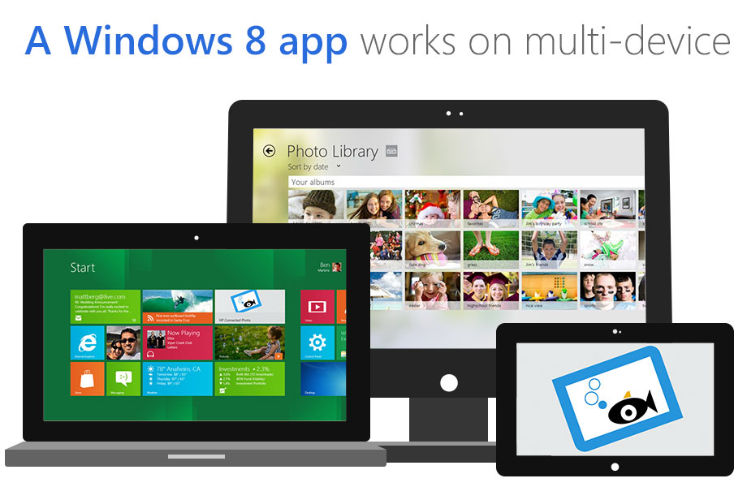
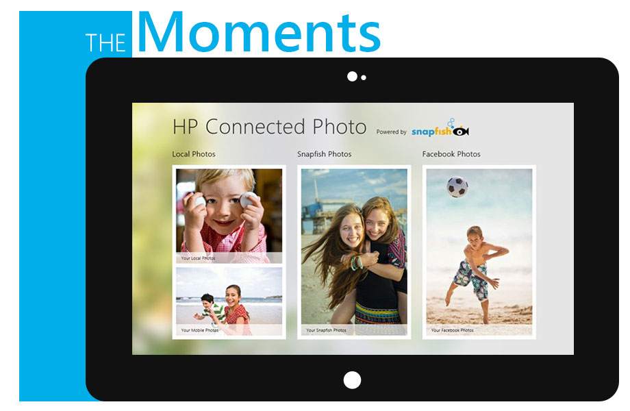
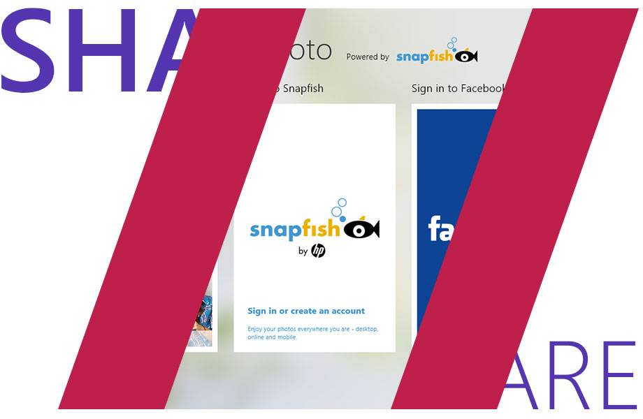
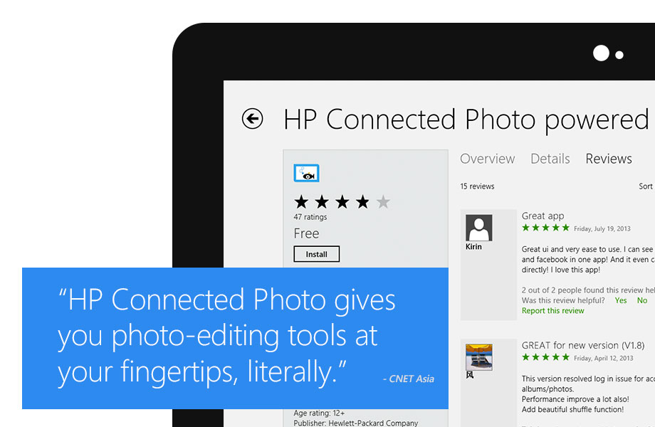
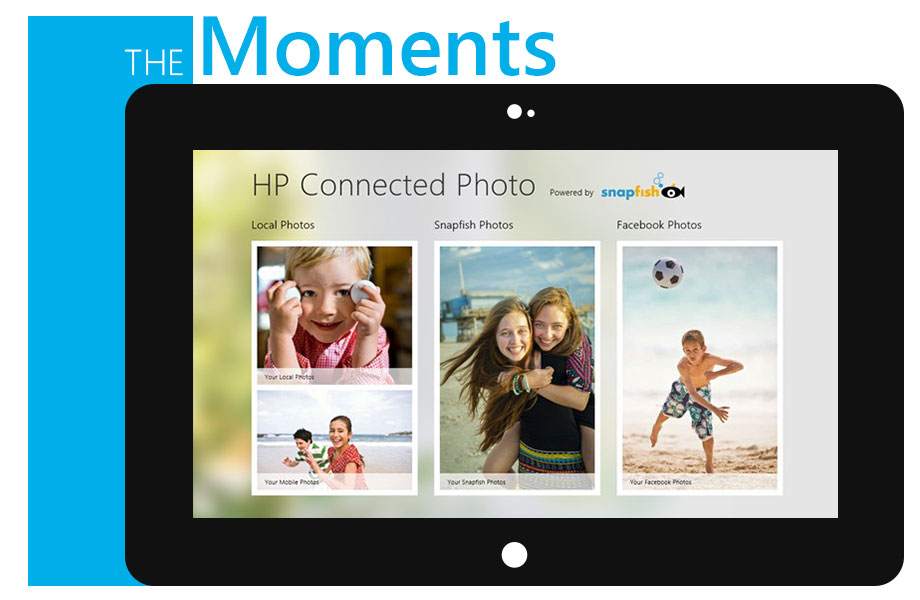
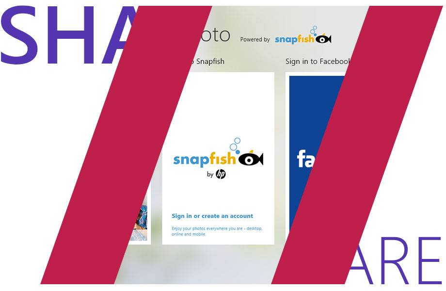
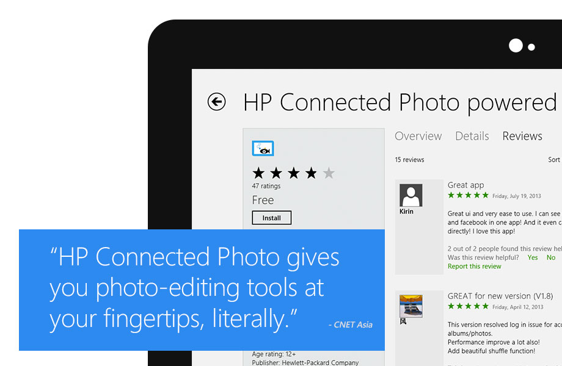
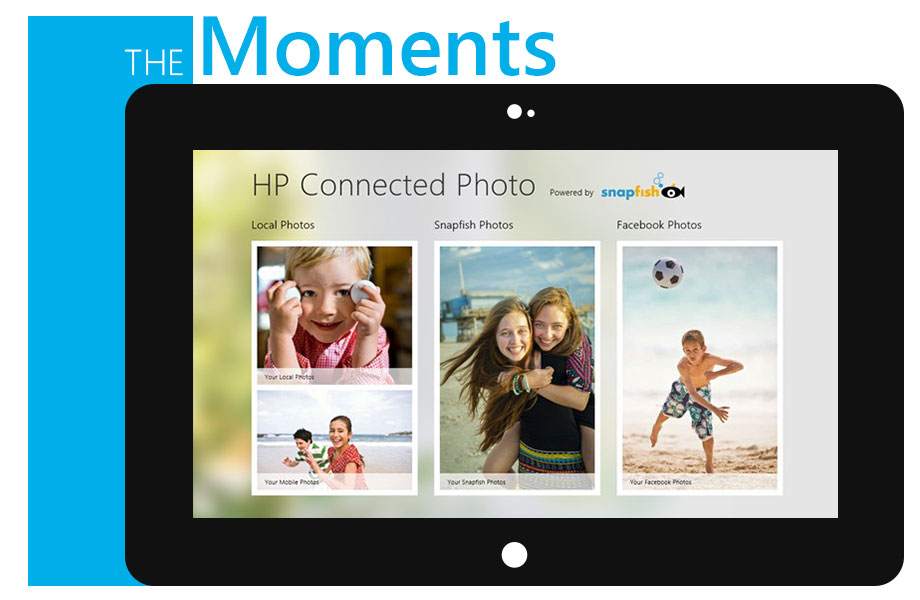
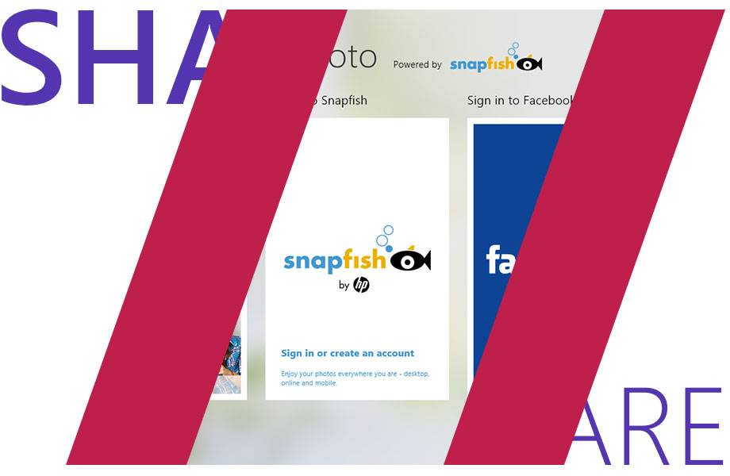
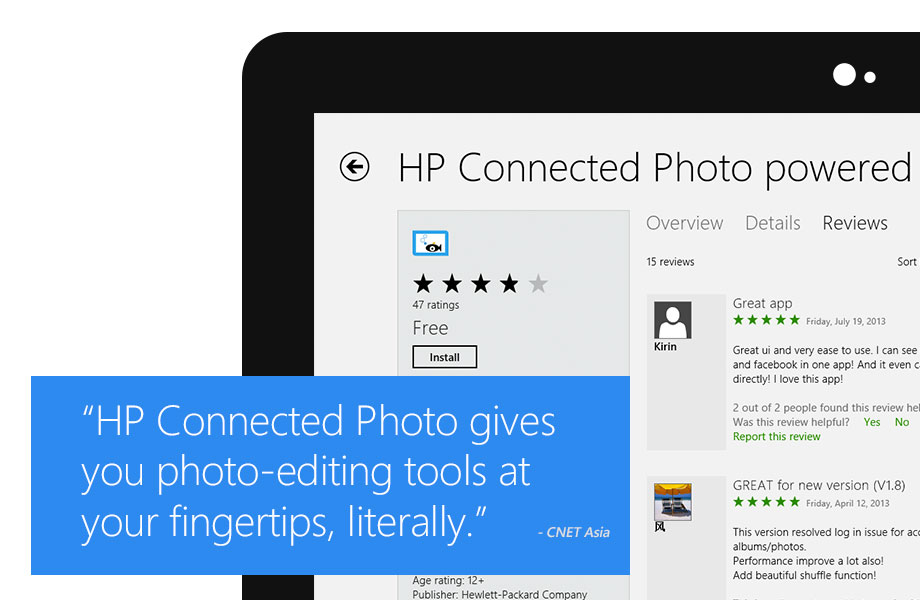

HP Connected Photo
A Windows 8 style app to make people enjoy playing with their photos, specially photos on Snapfish from HP. This was one of the very first apps that was specifically designed and built to elaborate the touch-rich nature of a new modern design style from Microsoft. As the lead designer for release version 1.0 in 2012, I was in charged to create all the interactions, and also supervised all visual designs and implementation.

 








Back To All Works